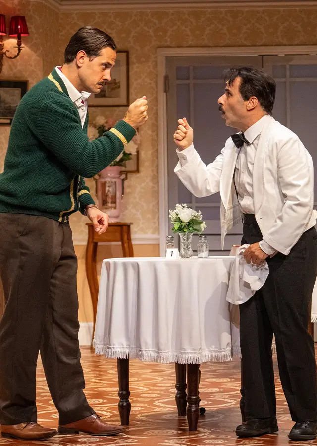
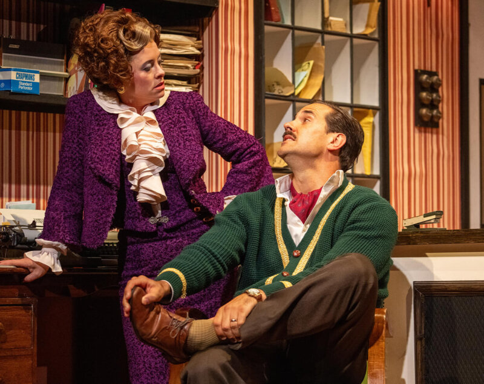

Danny Bayne as Basil Fawlty
Cassandra Hyde as Sybil Fawlty
Joanne Clifton as Polly Sherman
David Martinez as Manuel
Gerry Griffin as Terry
Paul Nicholas as Major Gowen
Join Basil (Danny Bayne), the delightfully bumbling Major (Paul Nicholas) and Polly (Joanne Clifton), with an 18-strong cast as they bring to life all your favourite moments from the show’s unforgettable twelve episodes. With sharp wit, chaos, and calamity at every turn, this is the comedy event of the year!

